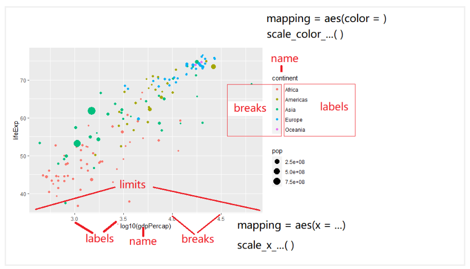
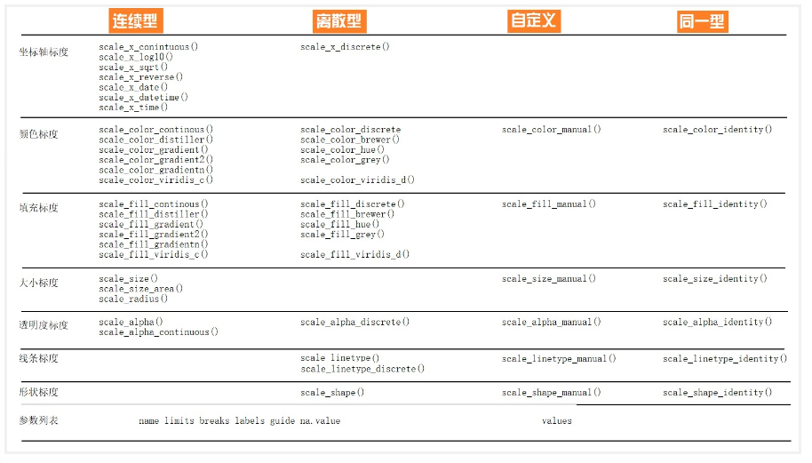

<!DOCTYPE html>


<html lang="zh-CN">


<head>
  <meta name="baidu-site-verification" content="codeva-NSg7ynviLa" />
  <meta charset="utf-8" />
    
  <meta name="viewport" content="width=device-width, initial-scale=1, maximum-scale=1" />
  <title>
    R包-ggplot2 |  
  </title>
  <meta name="generator" content="hexo-theme-ayer">
  
  <link rel="shortcut icon" href="/images/mojie.jpg" />
  
  
<link rel="stylesheet" href="/dist/main.css">

  <link rel="stylesheet" href="https://cdn.jsdelivr.net/gh/Shen-Yu/cdn/css/remixicon.min.css">
  
<link rel="stylesheet" href="/css/custom.css">

  
  <script src="https://cdn.jsdelivr.net/npm/pace-js@1.0.2/pace.min.js"></script>
  
  

  

<link rel="alternate" href="/atom.xml" title="null" type="application/atom+xml">
</head>

</html>

<body>
  <div id="app">
    
      
    <main class="content on">
      <section class="outer">
  <article
  id="post-R包-ggplot2"
  class="article article-type-post"
  itemscope
  itemprop="blogPost"
  data-scroll-reveal
>
  <div class="article-inner">
    
    <header class="article-header">
       
<h1 class="article-title sea-center" style="border-left:0" itemprop="name">
  R包-ggplot2
</h1>
 

    </header>
     
    <div class="article-meta">
      <a href="/posts/5cb25283/" class="article-date">
  <time datetime="2025-12-29T02:24:59.000Z" itemprop="datePublished">2025-12-29</time>
</a> 
  <div class="article-category">
    <a class="article-category-link" href="/categories/%E6%95%B0%E6%8D%AE%E5%88%86%E6%9E%90/">数据分析</a> / <a class="article-category-link" href="/categories/%E6%95%B0%E6%8D%AE%E5%88%86%E6%9E%90/R/">R</a>
  </div>
  
<div class="word_count">
    <span class="post-time">
        <span class="post-meta-item-icon">
            <i class="ri-quill-pen-line"></i>
            <span class="post-meta-item-text"> 字数统计:</span>
            <span class="post-count">3.1k</span>
        </span>
    </span>

    <span class="post-time">
        &nbsp; | &nbsp;
        <span class="post-meta-item-icon">
            <i class="ri-book-open-line"></i>
            <span class="post-meta-item-text"> 阅读时长≈</span>
            <span class="post-count">13 分钟</span>
        </span>
    </span>
</div>
 
    </div>
      
    <div class="tocbot"></div>


  
    <div class="article-entry" itemprop="articleBody">
       
  <link rel="stylesheet" type="text/css" href="https://cdn.jsdelivr.net/hint.css/2.4.1/hint.min.css"><p>主要基于《数据科学中的R语言》的学习笔记。</p>
<span id="more"></span>
<h1>ggplot2介绍</h1>
<p>ggplot2有一套优雅的绘图语法，包名中“gg”是grammar of graphics的简称。 Hadley Wickham将这套可视化语法诠释为:</p>
<blockquote>
<p>一张统计图形就是从<strong>数据</strong>到几何形状(geometric object，缩写geom)所包含的<strong>图形属性</strong>(aesthetic attribute，缩写aes)的一种映射。</p>
</blockquote>
<p>通俗解释：就是我们的<strong>数据</strong>通过图形的<strong>视觉元素</strong>表示出来。比如<strong>点的位置</strong>，如果坐标x值越大，水平方向离原点的位置就越远，数值越小，水平方向离原点的位置就越近。 <strong>数值的大小变成了视觉能感知的东西</strong>。</p>
<p><code>ggplot()</code>函数包括9个部件：</p>
<ul>
<li><strong>数据 (data)</strong> （数据框）</li>
<li><strong>映射 (mapping)</strong></li>
<li><strong>几何形状 (geom)</strong></li>
<li>统计变换 (stats)</li>
<li>标度 (scale)</li>
<li>坐标系 (coord)</li>
<li>分面 (facet)</li>
<li>主题 (theme)</li>
<li>存储和输出 (output)</li>
</ul>
<p>其中前三个是必需的。语法模板</p>
<figure class="highlight plaintext"><table><tr><td class="gutter"><pre><span class="line">1</span><br><span class="line">2</span><br></pre></td><td class="code"><pre><span class="line">ggplot(data = &lt;DATA&gt;) + </span><br><span class="line">   &lt;GEOM_FUNCTION&gt;(mapping = aes(&lt;MAPPINGS&gt;))</span><br></pre></td></tr></table></figure>
<p>此外，图形中还可能包含数据的统计变换(statistical transformation，缩写stats)，最后绘制在某个特定的坐标系(coordinate system，缩写coord)中，而分面(facet)则可以用来生成数据不同子集的图形。</p>
<h2 id="简单例子">简单例子</h2>
<p>用科考人员收集的企鹅体征<a target="_blank" rel="noopener" href="https://raw.githubusercontent.com/rfordatascience/tidytuesday/master/data/2020/2020-07-28/penguins.csv">数据</a>来演示。</p>
<figure class="highlight r"><table><tr><td class="gutter"><pre><span class="line">1</span><br><span class="line">2</span><br><span class="line">3</span><br><span class="line">4</span><br><span class="line">5</span><br><span class="line">6</span><br><span class="line">7</span><br></pre></td><td class="code"><pre><span class="line">library<span class="punctuation">(</span>tidyverse<span class="punctuation">)</span></span><br><span class="line">penguins <span class="operator">&lt;-</span> read_csv<span class="punctuation">(</span>here<span class="operator">::</span>here<span class="punctuation">(</span><span class="string">&quot;demo_data&quot;</span><span class="punctuation">,</span> <span class="string">&quot;penguins.csv&quot;</span><span class="punctuation">)</span><span class="punctuation">)</span> <span class="operator">%&gt;%</span></span><br><span class="line">  janitor<span class="operator">::</span>clean_names<span class="punctuation">(</span><span class="punctuation">)</span> <span class="operator">%&gt;%</span> </span><br><span class="line">  drop_na<span class="punctuation">(</span><span class="punctuation">)</span></span><br><span class="line"></span><br><span class="line">penguins <span class="operator">%&gt;%</span></span><br><span class="line">  head<span class="punctuation">(</span><span class="punctuation">)</span></span><br></pre></td></tr></table></figure>
<p>这里我们用到4个变量，species (企业种类)， sex (性别)， bill_length_mm (嘴峰长度) ， bill_depth_mm (嘴峰深度) 。</p>
<figure class="highlight plaintext"><table><tr><td class="gutter"><pre><span class="line">1</span><br><span class="line">2</span><br><span class="line">3</span><br></pre></td><td class="code"><pre><span class="line">penguins %&gt;%</span><br><span class="line">  select(species, sex, bill_length_mm, bill_depth_mm) %&gt;%</span><br><span class="line">  head(4)</span><br></pre></td></tr></table></figure>
<p>我们想要考察嘴峰长度(bill_length_mm)与嘴峰深度(bill_depth_mm)之间的关联，先绘制这两个变量的散点图，。</p>
<figure class="highlight plaintext"><table><tr><td class="gutter"><pre><span class="line">1</span><br><span class="line">2</span><br></pre></td><td class="code"><pre><span class="line">ggplot(penguins) +</span><br><span class="line">  geom_point(aes(x = bill_length_mm, y = bill_depth_mm))</span><br></pre></td></tr></table></figure>
<p>刚才看到的是位置上的映射，<code>ggplot()</code>还包含了颜色 (<strong>color</strong>)、形状 (<strong>shape</strong>) 以及透明度 (<strong>alpha</strong>) 等图形属性的映射。</p>
<p>比如我们在<code>aes()</code>里增加一个颜色映射<code>color = species</code>, 这样做就是希望，<strong>不同的企鹅类型</strong>, 用<strong>不同的颜色</strong>来表现。这里，企鹅类型有三组，那么就用三种不同的颜色来表示</p>
<figure class="highlight r"><table><tr><td class="gutter"><pre><span class="line">1</span><br><span class="line">2</span><br></pre></td><td class="code"><pre><span class="line">ggplot<span class="punctuation">(</span>penguins<span class="punctuation">)</span> <span class="operator">+</span></span><br><span class="line">  geom_point<span class="punctuation">(</span>aes<span class="punctuation">(</span>x <span class="operator">=</span> bill_length_mm<span class="punctuation">,</span> y <span class="operator">=</span> bill_depth_mm<span class="punctuation">,</span> color <span class="operator">=</span> species<span class="punctuation">)</span><span class="punctuation">)</span></span><br></pre></td></tr></table></figure>
<p>如果我们只是想把图中的点指定为某一种颜色，可以使用设置语句，例如</p>
<figure class="highlight plaintext"><table><tr><td class="gutter"><pre><span class="line">1</span><br><span class="line">2</span><br></pre></td><td class="code"><pre><span class="line">ggplot(penguins) +</span><br><span class="line">  geom_point(aes(x = bill_length_mm, y = bill_depth_mm), color = &quot;blue&quot;)</span><br></pre></td></tr></table></figure>
<p>注意这里 <code>color = &quot;blue&quot;</code> 不能放在 <code>aes()</code> 函数中，不然所有点就都是红色。</p>
<p>因为这种方式会将 ‘blue’ 映射到color轴，'blue’实际上是从c(‘blue’),是个长度为1的字符串，离散型变量，所以<strong>映射函数</strong>会把从c(‘blue’)映射到离散型的默认color轴，第一个颜色是红色，所以所有点是红色。注意映射函数接受长度为1或者长度和x,y等长的vector.</p>
<h2 id="图层叠加">图层叠加</h2>
<p><code>geom_point()</code> 可以画散点图，也可以使用<code>geom_smooth()</code>绘制平滑曲线，</p>
<figure class="highlight plaintext"><table><tr><td class="gutter"><pre><span class="line">1</span><br><span class="line">2</span><br></pre></td><td class="code"><pre><span class="line">ggplot(penguins) +</span><br><span class="line">  geom_smooth(aes(x = bill_length_mm, y = bill_depth_mm))</span><br></pre></td></tr></table></figure>
<p>我们也可以同时画出散点图和平滑曲线图，如下</p>
<figure class="highlight plaintext"><table><tr><td class="gutter"><pre><span class="line">1</span><br><span class="line">2</span><br><span class="line">3</span><br></pre></td><td class="code"><pre><span class="line">ggplot(penguins) +</span><br><span class="line">  geom_point(aes(x = bill_length_mm, y = bill_depth_mm)) +</span><br><span class="line">  geom_smooth(aes(x = bill_length_mm, y = bill_depth_mm))</span><br></pre></td></tr></table></figure>
<p>但是此时我们将相同的 <code>aes()</code> 函数写了两遍，我们可以将 <code>aes()</code> 函数放在 <code>ggplot()</code> 函数中，这样可以偷懒一点。</p>
<figure class="highlight r"><table><tr><td class="gutter"><pre><span class="line">1</span><br><span class="line">2</span><br><span class="line">3</span><br></pre></td><td class="code"><pre><span class="line">ggplot<span class="punctuation">(</span>penguins<span class="punctuation">,</span> aes<span class="punctuation">(</span>x <span class="operator">=</span> bill_length_mm<span class="punctuation">,</span> y <span class="operator">=</span> bill_depth_mm<span class="punctuation">)</span><span class="punctuation">)</span> <span class="operator">+</span></span><br><span class="line">  geom_point<span class="punctuation">(</span><span class="punctuation">)</span> <span class="operator">+</span></span><br><span class="line">  geom_smooth<span class="punctuation">(</span><span class="punctuation">)</span></span><br></pre></td></tr></table></figure>
<p>那么将  <code>aes()</code> 函数放在 <code>ggplot()</code> 函数中，和放在 <code>geom_point()</code> 有什么区别呢？二者其实是全局声明和局部声明的关系。如果全局变量和局部变量均有某个映射关系，使用局部变量中的映射关系，更详细的解释如下。</p>
<p>说白了，将  <code>aes()</code> 函数放在 <code>ggplot()</code> 函数中 就是为了偷懒，少打点字而已。</p>
<blockquote>
<ul>
<li>映射关系<code>aes(x = bill_length_mm, y = bill_depth_mm)</code> 写在<code>ggplot()</code>里, 为<strong>全局声明</strong>。那么，当<code>geom_point()</code>画图时，发现缺少图形所需要的映射关系（点的位置、点的大小、点的颜色等等），就会从<code>ggplot()</code>全局变量中继承映射关系。</li>
<li>如果映射关系<code>aes(x = bill_length_mm, y = bill_depth_mm)</code> 写在几何形状<code>geom_point()</code>里, 那么此处的映射关系就为<strong>局部声明</strong>, 那么<code>geom_point()</code>绘图时，发现所需要的映射关系已经存在，就不会继承全局变量的映射关系。</li>
</ul>
</blockquote>
<h2 id="保存图片">保存图片</h2>
<p>可以使用<code>ggsave()</code>函数，将图片保存为所需要的格式，如”.pdf”, “.png”等， 还可以指定图片的高度和宽度，默认<code>units</code>是英寸，也可以使用”cm”, or “mm”.</p>
<figure class="highlight r"><table><tr><td class="gutter"><pre><span class="line">1</span><br><span class="line">2</span><br><span class="line">3</span><br><span class="line">4</span><br><span class="line">5</span><br><span class="line">6</span><br><span class="line">7</span><br><span class="line">8</span><br><span class="line">9</span><br><span class="line">10</span><br><span class="line">11</span><br><span class="line">12</span><br><span class="line">13</span><br></pre></td><td class="code"><pre><span class="line">p1 <span class="operator">&lt;-</span> penguins <span class="operator">%&gt;%</span> </span><br><span class="line">  ggplot<span class="punctuation">(</span>aes<span class="punctuation">(</span>x <span class="operator">=</span> bill_length_mm<span class="punctuation">,</span> y <span class="operator">=</span> bill_depth_mm<span class="punctuation">)</span><span class="punctuation">)</span> <span class="operator">+</span></span><br><span class="line">  geom_smooth<span class="punctuation">(</span>method <span class="operator">=</span> lm<span class="punctuation">)</span> <span class="operator">+</span></span><br><span class="line">  geom_point<span class="punctuation">(</span>aes<span class="punctuation">(</span>color <span class="operator">=</span> species<span class="punctuation">)</span><span class="punctuation">)</span> <span class="operator">+</span></span><br><span class="line">  ggtitle<span class="punctuation">(</span><span class="string">&quot;This is my first plot&quot;</span><span class="punctuation">)</span></span><br><span class="line"></span><br><span class="line">ggsave<span class="punctuation">(</span></span><br><span class="line">  plot <span class="operator">=</span> p1<span class="punctuation">,</span></span><br><span class="line">  filename <span class="operator">=</span> <span class="string">&quot;my_plot.pdf&quot;</span><span class="punctuation">,</span></span><br><span class="line">  width <span class="operator">=</span> <span class="number">8</span><span class="punctuation">,</span></span><br><span class="line">  height <span class="operator">=</span> <span class="number">6</span><span class="punctuation">,</span></span><br><span class="line">  dpi <span class="operator">=</span> <span class="number">300</span></span><br><span class="line"><span class="punctuation">)</span></span><br></pre></td></tr></table></figure>
<h1>ggplot2之几何形状</h1>
<p>先看一组数据</p>
<figure class="highlight plaintext"><table><tr><td class="gutter"><pre><span class="line">1</span><br></pre></td><td class="code"><pre><span class="line">df &lt;- read_csv(&quot;./demo_data/datasaurus.csv&quot;)</span><br></pre></td></tr></table></figure>
<figure class="highlight r"><table><tr><td class="gutter"><pre><span class="line">1</span><br><span class="line">2</span><br><span class="line">3</span><br><span class="line">4</span><br><span class="line">5</span><br><span class="line">6</span><br><span class="line">7</span><br><span class="line">8</span><br><span class="line">9</span><br></pre></td><td class="code"><pre><span class="line"><span class="operator">&gt;</span> df</span><br><span class="line"><span class="comment"># A tibble: 1,846 × 3</span></span><br><span class="line">   dataset     x     y</span><br><span class="line">   <span class="operator">&lt;</span>chr<span class="operator">&gt;</span>   <span class="operator">&lt;</span>dbl<span class="operator">&gt;</span> <span class="operator">&lt;</span>dbl<span class="operator">&gt;</span></span><br><span class="line"> <span class="number">1</span> dino     <span class="number">55.4</span>  <span class="number">97.2</span></span><br><span class="line"> <span class="number">2</span> dino     <span class="number">51.5</span>  <span class="number">96.0</span></span><br><span class="line"> <span class="number">3</span> dino     <span class="number">46.2</span>  <span class="number">94.5</span></span><br><span class="line"> <span class="number">4</span> dino     <span class="number">42.8</span>  <span class="number">91.4</span></span><br><span class="line"> <span class="number">5</span> dino     <span class="number">40.8</span>  <span class="number">88.3</span></span><br></pre></td></tr></table></figure>
<p>先用<code>dataset</code>分组后，然后计算每组下<code>x</code>的均值和方差，<code>y</code>的均值和方差，以及<code>x，y</code>两者的相关系数，我们发现每组数据下它们几乎都是相等的</p>
<figure class="highlight r"><table><tr><td class="gutter"><pre><span class="line">1</span><br><span class="line">2</span><br><span class="line">3</span><br><span class="line">4</span><br><span class="line">5</span><br><span class="line">6</span><br><span class="line">7</span><br><span class="line">8</span><br></pre></td><td class="code"><pre><span class="line">df <span class="operator">%&gt;%</span></span><br><span class="line">  group_by<span class="punctuation">(</span>dataset<span class="punctuation">)</span> <span class="operator">%&gt;%</span></span><br><span class="line">  summarise<span class="punctuation">(</span></span><br><span class="line">    across<span class="punctuation">(</span>everything<span class="punctuation">(</span><span class="punctuation">)</span><span class="punctuation">,</span> <span class="built_in">list</span><span class="punctuation">(</span>mean <span class="operator">=</span> mean<span class="punctuation">,</span> sd <span class="operator">=</span> sd<span class="punctuation">)</span><span class="punctuation">,</span> .names <span class="operator">=</span> <span class="string">&quot;&#123;fn&#125;_&#123;col&#125;&quot;</span><span class="punctuation">)</span></span><br><span class="line">  <span class="punctuation">)</span> <span class="operator">%&gt;%</span></span><br><span class="line">  mutate<span class="punctuation">(</span></span><br><span class="line">    across<span class="punctuation">(</span><span class="built_in">is.numeric</span><span class="punctuation">,</span> <span class="built_in">round</span><span class="punctuation">,</span> <span class="number">3</span><span class="punctuation">)</span></span><br><span class="line">  <span class="punctuation">)</span></span><br></pre></td></tr></table></figure>
<p>如果上面代码不熟悉，可以用第 <a target="_blank" rel="noopener" href="https://bookdown.org/wangminjie/R4DS/tidyverse-dplyr.html#tidyverse-dplyr">12</a> 章的代码重新表达，也是一样的</p>
<figure class="highlight plaintext"><table><tr><td class="gutter"><pre><span class="line">1</span><br><span class="line">2</span><br><span class="line">3</span><br><span class="line">4</span><br><span class="line">5</span><br><span class="line">6</span><br><span class="line">7</span><br><span class="line">8</span><br><span class="line">9</span><br></pre></td><td class="code"><pre><span class="line">df %&gt;%</span><br><span class="line">  group_by(dataset) %&gt;%</span><br><span class="line">  summarize(</span><br><span class="line">    mean_x = mean(x),</span><br><span class="line">    mean_y = mean(y),</span><br><span class="line">    std_dev_x = sd(x),</span><br><span class="line">    std_dev_y = sd(y),</span><br><span class="line">    corr_x_y = cor(x, y)</span><br><span class="line">  )</span><br></pre></td></tr></table></figure>
<figure class="highlight r"><table><tr><td class="gutter"><pre><span class="line">1</span><br><span class="line">2</span><br><span class="line">3</span><br><span class="line">4</span><br><span class="line">5</span><br><span class="line">6</span><br><span class="line">7</span><br><span class="line">8</span><br><span class="line">9</span><br><span class="line">10</span><br><span class="line">11</span><br><span class="line">12</span><br><span class="line">13</span><br><span class="line">14</span><br><span class="line">15</span><br><span class="line">16</span><br></pre></td><td class="code"><pre><span class="line"><span class="comment">## # A tibble: 13 × 6</span></span><br><span class="line"><span class="comment">##    dataset    mean_x mean_y std_dev_x std_dev_y corr_x_y</span></span><br><span class="line"><span class="comment">##    &lt;chr&gt;       &lt;dbl&gt;  &lt;dbl&gt;     &lt;dbl&gt;     &lt;dbl&gt;    &lt;dbl&gt;</span></span><br><span class="line"><span class="comment">##  1 away         54.3   47.8      16.8      26.9  -0.0641</span></span><br><span class="line"><span class="comment">##  2 bullseye     54.3   47.8      16.8      26.9  -0.0686</span></span><br><span class="line"><span class="comment">##  3 circle       54.3   47.8      16.8      26.9  -0.0683</span></span><br><span class="line"><span class="comment">##  4 dino         54.3   47.8      16.8      26.9  -0.0645</span></span><br><span class="line"><span class="comment">##  5 dots         54.3   47.8      16.8      26.9  -0.0603</span></span><br><span class="line"><span class="comment">##  6 h_lines      54.3   47.8      16.8      26.9  -0.0617</span></span><br><span class="line"><span class="comment">##  7 high_lines   54.3   47.8      16.8      26.9  -0.0685</span></span><br><span class="line"><span class="comment">##  8 slant_down   54.3   47.8      16.8      26.9  -0.0690</span></span><br><span class="line"><span class="comment">##  9 slant_up     54.3   47.8      16.8      26.9  -0.0686</span></span><br><span class="line"><span class="comment">## 10 star         54.3   47.8      16.8      26.9  -0.0630</span></span><br><span class="line"><span class="comment">## 11 v_lines      54.3   47.8      16.8      26.9  -0.0694</span></span><br><span class="line"><span class="comment">## 12 wide_lines   54.3   47.8      16.8      26.9  -0.0666</span></span><br><span class="line"><span class="comment">## 13 x_shape      54.3   47.8      16.8      26.9  -0.0656</span></span><br></pre></td></tr></table></figure>
<p>那么，我们是否能得出结论，每组的数据长的差不多呢？然而，我们画图发现</p>
<p></p>
<p>事实上，每张图都相差很大。所以，这里想说明的是，眼见为实。换句话说，可视化是数据探索中非常重要的部分。本章的目的就是带领大家学习ggplot2基本的绘图技能。</p>
<h2 id="学习目标">学习目标</h2>
<h3 id="图形语法">图形语法</h3>
<p>图形语法 “grammar of graphics” (“ggplot2” 中的<code>gg</code> 就来源于此) 使用图层(layer)去描述和构建图形，下图是ggplot2图层概念的示意图</p>
<h3 id="图形部件">图形部件</h3>
<p>一张统计图形就是从<strong>数据</strong>到几何形状(geometric object，缩写geom)所包含的<strong>图形属性</strong>(aesthetic attribute，缩写aes)的一种映射。</p>
<ol>
<li>
<p><code>data</code>: 数据框data.frame (注意，不支持向量vector和列表list类型）</p>
</li>
<li>
<p><code>aes</code>: 数据框中的数据变量<strong>映射</strong>到图形属性。什么叫图形属性？就是图中点的位置、形状，大小，颜色等眼睛能看到的东西。什么叫映射？就是一种对应关系，比如数学中的函数<code>b = f(a)</code>就是<code>a</code>和<code>b</code>之间的一种映射关系, <code>a</code>的值决定或者控制了<code>b</code>的值，在ggplot2语法里，<code>a</code>就是我们输入的数据变量，<code>b</code>就是图形属性， 这些图形属性包括：</p>
<ul>
<li>x（x轴方向的位置）</li>
<li>y（y轴方向的位置）</li>
<li>color（点或者线等元素的颜色）</li>
<li>size（点或者线等元素的大小）</li>
<li>shape（点或者线等元素的形状）</li>
<li>alpha（点或者线等元素的透明度）</li>
</ul>
</li>
<li>
<p><code>geoms</code>: 几何形状，确定我们想画什么样的图，一个<code>geom_***</code>确定一种形状。更多几何形状推荐阅读<a target="_blank" rel="noopener" href="https://ggplot2.tidyverse.org/reference/">这里</a></p>
<ul>
<li><code>geom_bar()</code></li>
<li><code>geom_density()</code></li>
<li><code>geom_freqpoly()</code></li>
<li><code>geom_histogram()</code></li>
<li><code>geom_violin()</code></li>
<li><code>geom_boxplot()</code></li>
<li><code>geom_col()</code></li>
<li><code>geom_point()</code></li>
<li><code>geom_smooth()</code></li>
<li><code>geom_tile()</code></li>
<li><code>geom_density2d()</code></li>
<li><code>geom_bin2d()</code></li>
<li><code>geom_hex()</code></li>
<li><code>geom_count()</code></li>
<li><code>geom_text()</code></li>
<li><code>geom_sf()</code></li>
</ul>
</li>
<li>
<p><code>stats</code>: 统计变换</p>
</li>
<li>
<p><code>scales</code>: 标度</p>
</li>
<li>
<p><code>coord</code>: 坐标系统</p>
</li>
<li>
<p><code>facet</code>: 分面</p>
</li>
<li>
<p><code>layer</code>： 增加图层</p>
</li>
<li>
<p><code>theme</code>: 主题风格</p>
</li>
<li>
<p><code>save</code>: 保存图片</p>
</li>
</ol>
<h2 id="开始">开始</h2>
<p>R语言数据类型，有字符串型、数值型、因子型、逻辑型、日期型等。 ggplot2会将字符串型、因子型、逻辑型默认为<strong>离散变量</strong>，而数值型默认为<strong>连续变量</strong>，将日期时间为<strong>日期变量</strong>：</p>
<ul>
<li><strong>离散变量</strong>: 字符串型, 因子型, 逻辑型</li>
<li><strong>连续变量</strong>: 双精度数值, 整数数值</li>
<li><strong>日期变量</strong>: 日期, 时间, 日期时间</li>
</ul>
<h3 id="导入数据">导入数据</h3>
<figure class="highlight plaintext"><table><tr><td class="gutter"><pre><span class="line">1</span><br></pre></td><td class="code"><pre><span class="line">gapdata &lt;- read_csv(&quot;./demo_data/gapminder.csv&quot;)</span><br></pre></td></tr></table></figure>
<h3 id="检查数据">检查数据</h3>
<p>是否有缺失值</p>
<figure class="highlight plaintext"><table><tr><td class="gutter"><pre><span class="line">1</span><br><span class="line">2</span><br><span class="line">3</span><br><span class="line">4</span><br></pre></td><td class="code"><pre><span class="line">gapdata %&gt;%</span><br><span class="line">  summarise(</span><br><span class="line">    across(everything(), ~ sum(is.na(.)))</span><br><span class="line">  )</span><br></pre></td></tr></table></figure>
<figure class="highlight plaintext"><table><tr><td class="gutter"><pre><span class="line">1</span><br><span class="line">2</span><br><span class="line">3</span><br><span class="line">4</span><br></pre></td><td class="code"><pre><span class="line">## # A tibble: 1 × 6</span><br><span class="line">##   country continent  year lifeExp   pop gdpPercap</span><br><span class="line">##     &lt;int&gt;     &lt;int&gt; &lt;int&gt;   &lt;int&gt; &lt;int&gt;     &lt;int&gt;</span><br><span class="line">## 1       0         0     0       0     0         0</span><br></pre></td></tr></table></figure>
<ul>
<li><code>country</code> 代表国家</li>
<li><code>countinet</code> 表示所在的洲</li>
<li><code>year</code> 时间</li>
<li><code>lifeExp</code> 平均寿命</li>
<li><code>pop</code> 人口数量</li>
<li><code>gdpPercap</code> 人均GDP</li>
</ul>
<h2 id="基本绘图">基本绘图</h2>
<h3 id="柱状图">柱状图</h3>
<p>常用于一个离散变量</p>
<figure class="highlight plaintext"><table><tr><td class="gutter"><pre><span class="line">1</span><br><span class="line">2</span><br><span class="line">3</span><br></pre></td><td class="code"><pre><span class="line">gapdata %&gt;%</span><br><span class="line">  ggplot(aes(x = continent)) +</span><br><span class="line">  geom_bar()</span><br></pre></td></tr></table></figure>
<p>按照出现次数，从低到高排序</p>
<figure class="highlight plaintext"><table><tr><td class="gutter"><pre><span class="line">1</span><br><span class="line">2</span><br><span class="line">3</span><br></pre></td><td class="code"><pre><span class="line">gapdata %&gt;%</span><br><span class="line">  ggplot(aes(x = reorder(continent, continent, length))) +</span><br><span class="line">  geom_bar()</span><br></pre></td></tr></table></figure>
<p>翻转坐标轴，使用 <code>coord_flip()</code> 函数</p>
<figure class="highlight plaintext"><table><tr><td class="gutter"><pre><span class="line">1</span><br><span class="line">2</span><br><span class="line">3</span><br><span class="line">4</span><br></pre></td><td class="code"><pre><span class="line">gapdata %&gt;%</span><br><span class="line">  ggplot(aes(x = reorder(continent, continent, length))) +</span><br><span class="line">  geom_bar() +</span><br><span class="line">  coord_flip()</span><br></pre></td></tr></table></figure>
<h1>ggplot2之标度</h1>
<h2 id="标度">标度</h2>
<p>在 <a target="_blank" rel="noopener" href="https://bookdown.org/wangminjie/R4DS/tidyverse-ggplot2-geom.html#tidyverse-ggplot2-geom">22</a>章，我们了解到ggplot2中，映射是数据转化到图形属性，这里的图形属性是指视觉可以感知的东西，比如大小，形状，颜色和位置等。我们今天讨论的标度（scale）是控制着数据到图形属性映射的函数，每一种标度都是从数据空间的某个区域（标度的定义域）到图形属性空间的某个区域（标度的值域）的一个函数。</p>
<p>简单点来说，<strong>标度是用于调整数据映射的图形属性</strong>。 在ggplot2中，每一种图形属性都拥有一个默认的标度，也许你对这个默认的标度不满意，可以就需要学习如何修改默认的标度。比如， 系统默认<code>&quot;a&quot;</code>对应红色，<code>&quot;b&quot;</code>对应蓝色，我们想让<code>&quot;a&quot;</code>对应紫色，<code>&quot;b&quot;</code>对应橙色。</p>
<h2 id="图形属性和变量类型">图形属性和变量类型</h2>
<p>还是用我们熟悉的<code>ggplot2::mpg</code>，可能有同学说，我画图没接触到<code>scale</code>啊，比如</p>
<figure class="highlight plaintext"><table><tr><td class="gutter"><pre><span class="line">1</span><br></pre></td><td class="code"><pre><span class="line">library(tidyverse)</span><br></pre></td></tr></table></figure>
<figure class="highlight plaintext"><table><tr><td class="gutter"><pre><span class="line">1</span><br><span class="line">2</span><br><span class="line">3</span><br></pre></td><td class="code"><pre><span class="line">mpg %&gt;% </span><br><span class="line">  ggplot(aes(x = displ, y = hwy)) + </span><br><span class="line">  geom_point(aes(colour = class)) </span><br></pre></td></tr></table></figure>
<p>事实上，根据映射关系和变量名，我们将标度写完整，应该是这样的</p>
<figure class="highlight plaintext"><table><tr><td class="gutter"><pre><span class="line">1</span><br><span class="line">2</span><br><span class="line">3</span><br><span class="line">4</span><br><span class="line">5</span><br><span class="line">6</span><br></pre></td><td class="code"><pre><span class="line">ggplot(mpg, aes(x = displ, y = hwy)) + </span><br><span class="line">  geom_point(aes(colour = class)) +</span><br><span class="line">  </span><br><span class="line">  scale_x_continuous() + </span><br><span class="line">  scale_y_continuous() + </span><br><span class="line">  scale_colour_discrete()</span><br></pre></td></tr></table></figure>
<p>如果每次都要手动设置一次标度函数，那将是比较繁琐的事情。因此ggplot2使用了默认了设置，如果不满意ggplot2的默认值，可以手动调整或者改写标度，比如</p>
<figure class="highlight plaintext"><table><tr><td class="gutter"><pre><span class="line">1</span><br><span class="line">2</span><br><span class="line">3</span><br><span class="line">4</span><br><span class="line">5</span><br><span class="line">6</span><br></pre></td><td class="code"><pre><span class="line">ggplot(mpg, aes(x = displ, y = hwy)) + </span><br><span class="line">  geom_point(aes(colour = class)) +</span><br><span class="line">  </span><br><span class="line">  scale_x_continuous(name = &quot;This is my x axis&quot;) + </span><br><span class="line">  scale_y_continuous(name = &quot;This is my y axis&quot;) + </span><br><span class="line">  scale_colour_brewer()</span><br></pre></td></tr></table></figure>
<h2 id="坐标轴和图例是同样的东西">坐标轴和图例是同样的东西</h2>
<p></p>
<h2 id="丰富的标度体系">丰富的标度体系</h2>
<p>注意到，标度函数是由”_“分割的三个部分构成的：</p>
<blockquote>
<p>scale - 视觉属性名 (e.g., colour, shape or x) - 标度名 (e.g., continuous, discrete, brewer).</p>
</blockquote>
<p></p>
<p>每个标度函数内部都有丰富的参数系统</p>
<figure class="highlight plaintext"><table><tr><td class="gutter"><pre><span class="line">1</span><br><span class="line">2</span><br><span class="line">3</span><br><span class="line">4</span><br><span class="line">5</span><br><span class="line">6</span><br><span class="line">7</span><br><span class="line">8</span><br><span class="line">9</span><br><span class="line">10</span><br></pre></td><td class="code"><pre><span class="line">scale_colour_manual(</span><br><span class="line">  palette = function(), </span><br><span class="line">  limits = NULL,</span><br><span class="line">  name = waiver(),</span><br><span class="line">  labels = waiver(),</span><br><span class="line">  breaks = waiver(),</span><br><span class="line">  minor_breaks = waiver(),</span><br><span class="line">  values = waiver(),</span><br><span class="line">  ...</span><br><span class="line">)</span><br></pre></td></tr></table></figure>
<ul>
<li>参数<code>name</code>，坐标和图例的名字，如果不想要图例的名字，就可以 <code>name = NULL</code></li>
<li>参数<code>limits</code>, 坐标或图例的范围区间。连续性<code>c(n, m)</code>，离散型<code>c(&quot;a&quot;, &quot;b&quot;, &quot;c&quot;)</code></li>
<li>参数<code>breaks</code>, 控制显示在坐标轴或者图例上的值（元素）</li>
<li>参数<code>labels</code>, 坐标和图例的间隔标签
<ul>
<li>一般情况下，内置函数会自动完成</li>
<li>也可人工指定一个字符型向量，与<code>breaks</code>提供的字符型向量一一对应</li>
<li>也可以是函数，把<code>breaks</code>提供的字符型向量当做函数的输入</li>
<li><code>NULL</code>，就是去掉标签</li>
</ul>
</li>
<li>参数<code>values</code> 指的是（颜色、形状等）视觉属性值,
<ul>
<li>要么，与数值的顺序一致；</li>
<li>要么，与<code>breaks</code>提供的字符型向量长度一致</li>
<li>要么，用命名向量<code>c(&quot;数据标签&quot; = &quot;视觉属性&quot;)</code>提供</li>
</ul>
</li>
<li>参数<code>expand</code>, 控制参数溢出量</li>
<li>参数<code>range</code>, 设置尺寸大小范围，比如针对点的相对大小</li>
</ul>
<p>下面，我们通过具体的案例讲解如何使用参数，把图形变成我们想要的模样。</p>
<h2 id="案例详解">案例详解</h2>
<p>先导入一个数据</p>
<figure class="highlight plaintext"><table><tr><td class="gutter"><pre><span class="line">1</span><br></pre></td><td class="code"><pre><span class="line">gapdata &lt;- read_csv(&quot;./demo_data/gapminder.csv&quot;)</span><br></pre></td></tr></table></figure>
<figure class="highlight plaintext"><table><tr><td class="gutter"><pre><span class="line">1</span><br><span class="line">2</span><br><span class="line">3</span><br><span class="line">4</span><br><span class="line">5</span><br><span class="line">6</span><br></pre></td><td class="code"><pre><span class="line">newgapdata &lt;- gapdata %&gt;% </span><br><span class="line">  group_by(continent, country) %&gt;% </span><br><span class="line">  summarise(</span><br><span class="line">    across(c(lifeExp, gdpPercap, pop), mean)</span><br><span class="line">  )</span><br><span class="line">newgapdata</span><br></pre></td></tr></table></figure>
<p>画散点图</p>
<figure class="highlight plaintext"><table><tr><td class="gutter"><pre><span class="line">1</span><br><span class="line">2</span><br><span class="line">3</span><br><span class="line">4</span><br></pre></td><td class="code"><pre><span class="line">newgapdata %&gt;% </span><br><span class="line">  ggplot(aes(x = gdpPercap, y = lifeExp)) +</span><br><span class="line">    geom_point(aes(color = continent, size = pop)) +</span><br><span class="line">    scale_x_continuous()</span><br></pre></td></tr></table></figure> 
      <!-- reward -->
      
    </div>
    

    <!-- copyright -->
    
    <div class="declare">
      <ul class="post-copyright">
        <li>
          <i class="ri-copyright-line"></i>
          <strong>版权声明： </strong>
          
          本博客所有文章除特别声明外，著作权归作者所有。转载请注明出处！
          
        </li>
      </ul>
    </div>
    
    <footer class="article-footer">
       
  <ul class="article-tag-list" itemprop="keywords"><li class="article-tag-list-item"><a class="article-tag-list-link" href="/tags/R/" rel="tag">R</a></li><li class="article-tag-list-item"><a class="article-tag-list-link" href="/tags/%E6%95%B0%E6%8D%AE%E5%88%86%E6%9E%90/" rel="tag">数据分析</a></li></ul>

    </footer>
  </div>

   
  <nav class="article-nav">
    
      <a href="/posts/9cc5d19c/" class="article-nav-link">
        <strong class="article-nav-caption">上一篇</strong>
        <div class="article-nav-title">
          
            shell多进程并行计算代码
          
        </div>
      </a>
    
    
      <a href="/posts/55215de0/" class="article-nav-link">
        <strong class="article-nav-caption">下一篇</strong>
        <div class="article-nav-title">Linux之time命令</div>
      </a>
    
  </nav>

   
<!-- valine评论 -->
<div id="vcomments-box">
  <div id="vcomments"></div>
</div>
<script src="//cdn1.lncld.net/static/js/3.0.4/av-min.js"></script>
<script src="https://cdn.jsdelivr.net/npm/valine@1.4.14/dist/Valine.min.js"></script>
<script>
  new Valine({
    el: "#vcomments",
    app_id: "yHN3kf7fHt5wvleM2DVoHLdY-gzGzoHsz",
    app_key: "RPIwmdftljIzOtAULwc7JCAp",
    path: window.location.pathname,
    avatar: "monsterid",
    placeholder: "靓仔，看完留个评论再走哇！\n只需要填入昵称和邮箱就可以了",
    recordIP: true,
  });
  const infoEle = document.querySelector("#vcomments .info");
  if (infoEle && infoEle.childNodes && infoEle.childNodes.length > 0) {
    infoEle.childNodes.forEach(function (item) {
      item.parentNode.removeChild(item);
    });
  }
</script>
<style>
  #vcomments-box {
    padding: 5px 30px;
  }

  @media screen and (max-width: 800px) {
    #vcomments-box {
      padding: 5px 0px;
    }
  }

  #vcomments-box #vcomments {
    background-color: #fff;
  }

  .v .vlist .vcard .vh {
    padding-right: 20px;
  }

  .v .vlist .vcard {
    padding-left: 10px;
  }
</style>

 
   
     
</article>

</section>
      <footer class="footer">
  <div class="outer">
    <ul>
      <li>
        Copyrights &copy;
        2019-2026
        <i class="ri-heart-fill heart_icon"></i> Vincere Zhou
      </li>
    </ul>
    <ul>
      <li>
        
        
        <span>
  <span><i class="ri-user-3-fill"></i>访问人数:<span id="busuanzi_value_site_uv"></span></s>
  <span class="division">|</span>
  <span><i class="ri-eye-fill"></i>浏览次数:<span id="busuanzi_value_page_pv"></span></span>
</span>
        
      </li>
    </ul>
    <ul>
      
    </ul>
    <ul>
      
    </ul>
    <ul>
      <li>
        <!-- cnzz统计 -->
        
      </li>
    </ul>

    <!-- 与只只在一起天数 -->
	<ul>
		<li><span id="lovetime_span"></span></li>
	</ul>
    <script type="text/javascript">			
        function show_runtime() {
            window.setTimeout("show_runtime()", 1000);
            X = new Date("03/04/2021 22:11:00");
            Y = new Date();
            T = (Y.getTime() - X.getTime());
            M = 24 * 60 * 60 * 1000;
            a = T / M;
            A = Math.floor(a);
            b = (a - A) * 24;
            B = Math.floor(b);
            c = (b - B) * 60;
            C = Math.floor((b - B) * 60);
            D = Math.floor((c - C) * 60);
            lovetime_span.innerHTML = "只只和男朋友在一起了 " + A + "天" + B + "小时" + C + "分" + D + "秒"
        }
        show_runtime();
    </script>

  </div>
</footer>
      <div class="float_btns">
        <div class="totop" id="totop">
  <i class="ri-arrow-up-line"></i>
</div>

      </div>
    </main>
    <aside class="sidebar on">
      <button class="navbar-toggle"></button>
<nav class="navbar">
  
  <div class="logo">
    <a href="/"></a>
  </div>
  
  <ul class="nav nav-main">
    
    <li class="nav-item">
      <a class="nav-item-link" href="/">主页</a>
    </li>
    
    <li class="nav-item">
      <a class="nav-item-link" href="/archives">归档</a>
    </li>
    
    <li class="nav-item">
      <a class="nav-item-link" href="/categories">分类</a>
    </li>
    
    <li class="nav-item">
      <a class="nav-item-link" href="/tags">标签</a>
    </li>
    
    <li class="nav-item">
      <a class="nav-item-link" href="/friends">友链</a>
    </li>
    
    <li class="nav-item">
      <a class="nav-item-link" href="/about">关于</a>
    </li>
    
  </ul>
</nav>
<nav class="navbar navbar-bottom">
  <ul class="nav">
    <li class="nav-item">
      
      <a class="nav-item-link nav-item-search"  title="搜索">
        <i class="ri-search-line"></i>
      </a>
      
      
      <a class="nav-item-link" target="_blank" href="/atom.xml" title="RSS Feed">
        <i class="ri-rss-line"></i>
      </a>
      
    </li>
  </ul>
</nav>
<div class="search-form-wrap">
  <div class="local-search local-search-plugin">
  <input type="search" id="local-search-input" class="local-search-input" placeholder="Search...">
  <div id="local-search-result" class="local-search-result"></div>
</div>
</div>
    </aside>
    <script>
      if (window.matchMedia("(max-width: 768px)").matches) {
        document.querySelector('.content').classList.remove('on');
        document.querySelector('.sidebar').classList.remove('on');
      }
    </script>
    <div id="mask"></div>

<!-- #reward -->
<div id="reward">
  <span class="close"><i class="ri-close-line"></i></span>
  <p class="reward-p"><i class="ri-cup-line"></i>请我喝杯茶吧~</p>
  <div class="reward-box">
    
    <div class="reward-item">
      
      <span class="reward-type">支付宝</span>
    </div>
    
    
    <div class="reward-item">
      
      <span class="reward-type">微信</span>
    </div>
    
  </div>
</div>
    
<script src="/js/jquery-2.0.3.min.js"></script>


<script src="/js/lazyload.min.js"></script>

<!-- Tocbot -->


<script src="/js/tocbot.min.js"></script>

<script>
  tocbot.init({
    tocSelector: '.tocbot',
    contentSelector: '.article-entry',
    headingSelector: 'h1, h2, h3, h4, h5, h6',
    hasInnerContainers: true,
    scrollSmooth: true,
    scrollContainer: 'main',
    positionFixedSelector: '.tocbot',
    positionFixedClass: 'is-position-fixed',
    fixedSidebarOffset: 'auto'
  });
</script>

<script src="https://cdn.jsdelivr.net/npm/jquery-modal@0.9.2/jquery.modal.min.js"></script>
<link rel="stylesheet" href="https://cdn.jsdelivr.net/npm/jquery-modal@0.9.2/jquery.modal.min.css">
<script src="https://cdn.jsdelivr.net/npm/justifiedGallery@3.7.0/dist/js/jquery.justifiedGallery.min.js"></script>

<script src="/dist/main.js"></script>

<!-- ImageViewer -->

<!-- Root element of PhotoSwipe. Must have class pswp. -->
<div class="pswp" tabindex="-1" role="dialog" aria-hidden="true">

    <!-- Background of PhotoSwipe. 
         It's a separate element as animating opacity is faster than rgba(). -->
    <div class="pswp__bg"></div>

    <!-- Slides wrapper with overflow:hidden. -->
    <div class="pswp__scroll-wrap">

        <!-- Container that holds slides. 
            PhotoSwipe keeps only 3 of them in the DOM to save memory.
            Don't modify these 3 pswp__item elements, data is added later on. -->
        <div class="pswp__container">
            <div class="pswp__item"></div>
            <div class="pswp__item"></div>
            <div class="pswp__item"></div>
        </div>

        <!-- Default (PhotoSwipeUI_Default) interface on top of sliding area. Can be changed. -->
        <div class="pswp__ui pswp__ui--hidden">

            <div class="pswp__top-bar">

                <!--  Controls are self-explanatory. Order can be changed. -->

                <div class="pswp__counter"></div>

                <button class="pswp__button pswp__button--close" title="Close (Esc)"></button>

                <button class="pswp__button pswp__button--share" style="display:none" title="Share"></button>

                <button class="pswp__button pswp__button--fs" title="Toggle fullscreen"></button>

                <button class="pswp__button pswp__button--zoom" title="Zoom in/out"></button>

                <!-- Preloader demo http://codepen.io/dimsemenov/pen/yyBWoR -->
                <!-- element will get class pswp__preloader--active when preloader is running -->
                <div class="pswp__preloader">
                    <div class="pswp__preloader__icn">
                        <div class="pswp__preloader__cut">
                            <div class="pswp__preloader__donut"></div>
                        </div>
                    </div>
                </div>
            </div>

            <div class="pswp__share-modal pswp__share-modal--hidden pswp__single-tap">
                <div class="pswp__share-tooltip"></div>
            </div>

            <button class="pswp__button pswp__button--arrow--left" title="Previous (arrow left)">
            </button>

            <button class="pswp__button pswp__button--arrow--right" title="Next (arrow right)">
            </button>

            <div class="pswp__caption">
                <div class="pswp__caption__center"></div>
            </div>

        </div>

    </div>

</div>

<link rel="stylesheet" href="https://cdn.jsdelivr.net/npm/photoswipe@4.1.3/dist/photoswipe.min.css">
<link rel="stylesheet" href="https://cdn.jsdelivr.net/npm/photoswipe@4.1.3/dist/default-skin/default-skin.min.css">
<script src="https://cdn.jsdelivr.net/npm/photoswipe@4.1.3/dist/photoswipe.min.js"></script>
<script src="https://cdn.jsdelivr.net/npm/photoswipe@4.1.3/dist/photoswipe-ui-default.min.js"></script>

<script>
    function viewer_init() {
        let pswpElement = document.querySelectorAll('.pswp')[0];
        let $imgArr = document.querySelectorAll(('.article-entry img:not(.reward-img)'))

        $imgArr.forEach(($em, i) => {
            $em.onclick = () => {
                // slider展开状态
                // todo: 这样不好，后面改成状态
                if (document.querySelector('.left-col.show')) return
                let items = []
                $imgArr.forEach(($em2, i2) => {
                    let img = $em2.getAttribute('data-idx', i2)
                    let src = $em2.getAttribute('data-target') || $em2.getAttribute('src')
                    let title = $em2.getAttribute('alt')
                    // 获得原图尺寸
                    const image = new Image()
                    image.src = src
                    items.push({
                        src: src,
                        w: image.width || $em2.width,
                        h: image.height || $em2.height,
                        title: title
                    })
                })
                var gallery = new PhotoSwipe(pswpElement, PhotoSwipeUI_Default, items, {
                    index: parseInt(i)
                });
                gallery.init()
            }
        })
    }
    viewer_init()
</script>

<!-- MathJax -->

<script type="text/x-mathjax-config">
  MathJax.Hub.Config({
      tex2jax: {
          inlineMath: [ ['$','$'], ["\\(","\\)"]  ],
          processEscapes: true,
          skipTags: ['script', 'noscript', 'style', 'textarea', 'pre', 'code']
      }
  });

  MathJax.Hub.Queue(function() {
      var all = MathJax.Hub.getAllJax(), i;
      for(i=0; i < all.length; i += 1) {
          all[i].SourceElement().parentNode.className += ' has-jax';
      }
  });
</script>

<script src="https://cdn.jsdelivr.net/npm/mathjax@2.7.6/unpacked/MathJax.js?config=TeX-AMS-MML_HTMLorMML"></script>
<script>
  var ayerConfig = {
    mathjax: true
  }
</script>

<!-- Katex -->

<!-- busuanzi  -->


<script src="/js/busuanzi-2.3.pure.min.js"></script>


<!-- ClickLove -->

<!-- ClickBoom1 -->

<!-- ClickBoom2 -->

<!-- CodeCopy -->


<link rel="stylesheet" href="/css/clipboard.css">

<script src="https://cdn.jsdelivr.net/npm/clipboard@2/dist/clipboard.min.js"></script>
<script>
  function wait(callback, seconds) {
    var timelag = null;
    timelag = window.setTimeout(callback, seconds);
  }
  !function (e, t, a) {
    var initCopyCode = function(){
      var copyHtml = '';
      copyHtml += '<button class="btn-copy" data-clipboard-snippet="">';
      copyHtml += '<i class="ri-file-copy-2-line"></i><span>COPY</span>';
      copyHtml += '</button>';
      $(".highlight .code pre").before(copyHtml);
      $(".article pre code").before(copyHtml);
      var clipboard = new ClipboardJS('.btn-copy', {
        target: function(trigger) {
          return trigger.nextElementSibling;
        }
      });
      clipboard.on('success', function(e) {
        let $btn = $(e.trigger);
        $btn.addClass('copied');
        let $icon = $($btn.find('i'));
        $icon.removeClass('ri-file-copy-2-line');
        $icon.addClass('ri-checkbox-circle-line');
        let $span = $($btn.find('span'));
        $span[0].innerText = 'COPIED';
        
        wait(function () { // 等待两秒钟后恢复
          $icon.removeClass('ri-checkbox-circle-line');
          $icon.addClass('ri-file-copy-2-line');
          $span[0].innerText = 'COPY';
        }, 2000);
      });
      clipboard.on('error', function(e) {
        e.clearSelection();
        let $btn = $(e.trigger);
        $btn.addClass('copy-failed');
        let $icon = $($btn.find('i'));
        $icon.removeClass('ri-file-copy-2-line');
        $icon.addClass('ri-time-line');
        let $span = $($btn.find('span'));
        $span[0].innerText = 'COPY FAILED';
        
        wait(function () { // 等待两秒钟后恢复
          $icon.removeClass('ri-time-line');
          $icon.addClass('ri-file-copy-2-line');
          $span[0].innerText = 'COPY';
        }, 2000);
      });
    }
    initCopyCode();
  }(window, document);
</script>


<!-- CanvasBackground -->


    
  </div>
<script src="/live2dw/lib/L2Dwidget.min.js?094cbace49a39548bed64abff5988b05"></script><script>L2Dwidget.init({"pluginRootPath":"live2dw/","pluginJsPath":"lib/","pluginModelPath":"assets/","tagMode":false,"debug":false,"model":{"jsonPath":"/live2dw/assets/wanko.model.json"},"display":{"position":"left","width":150,"height":300,"hOffset":80,"vOffset":-70},"mobile":{"show":false,"scale":0.5},"log":false});</script></body>

</html>